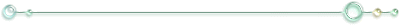

生きているだけでぼくらは誰かを傷つけている
生きているだけでぼくらは幾つもの命を奪い続ける
それなら
生きているだけで救える命は
幾つある？
「あなたの隣に」
…Hello Hello
返事は無くて
…Knock Knock
木霊も無くて
探してみても 鍵穴も無く
開いてくれないドアの前
幾ら呼びかけ続けても
答えは返ってこなかった
そしていつしか不安になって
鍵穴も取っ手も無いドアを
思いっきり蹴飛ばした
……そこには誰もいなかった
私の心を覗いてみても
そこには誰もいなかった
涙には
何の力も意味も無いのに
涙を流しても
運命は何も変わらないのに
＜体の悲鳴＞は全ての命に与えられた
ならばどうして＜心の悲鳴＞は
何故神さまは
この惑星に息づく命の中から
人間にだけ
意味も無い涙を与えたのですか
逃げているだけだという事実は
誰に告げられる事がなくとも
本人が一番良く思い知っているモノ
思い知っているからこそ 全てから逃げるように
…彼は走り続ける
堕ち往く奈落の底まで……
きっと
心と体は仲が良くない
心がどんなに叫んでいても
彼の唇は何の音も紡がない
心がどんなに涙を流していても
彼女は楽しげに微笑んでいる
心がどんなに血を吐き苦しんでいても…実際に血反吐など生まれるはずもなく
体は今日も時を刻み 秩序に従い動き続ける
心がどんなに激しく悲鳴をあげても……
その悲鳴は決して空気を震わせはしないのだから……
扉の向こうに隠れさえすれば 決して誰にも届かない……
……例え心が死んでしまったとしても
体は静かに生き続けていく……
悩みなんて大抵のものは
季節が一つ変わる頃には
花が枯れるように消えてしまうものなのだけど
咲いている間は決して霞まない
まるで呪いのような
祝福。
「哀しい」と「魂」
言葉の波紋が似ていて 少し悲しくなった
それだけのこと。
吐き気がする 胸が痛い
それでも前に進み続けるしかない 逃げる事は赦さない
私は 何度 “私は愚かだ”と
思い知れば良いんだろうか
出航は希望に溢れ
力強い帆と共に
嵐という名も知らず
こんなはずではないでしょう
マストは折れて
小さな小舟
流されるままに大洋をさまよう
手漕ぎ船へと成り下がり
何処へ向かうも意志は頼れぬ
目的地は今どこにいるのか
どろどろぐちゃぐちゃ
諦めと嫌悪と
僕なんか嫌いだと責めるのは
意志薄弱な僕が暴君にならない為には
どうしても必要なプロセスで
嫌い嫌い
僕なんか大嫌い
リズムに乗って楽しげに
歌いあげてやろうじゃないか
僕なんか僕なんか大嫌い
さよならさよならさようなら
誰か誰かこの僕に
身勝手な、バツヲ、クダサイ
（某オリキャラのイメージ。誰か分かる人いるかなー/笑）
「殺してください」
左胸はそう訴えるけれど
いざ死神を前にしたら 命乞いをするに決まっている
すぐに大切な物を忘れてしまいそうになるこの鼓動に
誰か罰を与えてくれないだろうか
（上の奴の続き物？）
むかし、むかし、ではなくて
どこともしれないばしょのおはなし
むかし、むかしかは分かりません
だけどとある所に、ね
小さな子犬が一人いたの
その子犬は、とても小さくて
ちっとも速くも走れなくて、ぶきっちょで、けんかではいつも負けてばかり
だけどね、そう、その子犬はね、
（足の速さとかはともかくとしても）自分が弱いなんて、ちっとも思ってなかったんですって
だから彼はね、小さくてのろまで不器用でひ弱でも、いつも幸せそうだったの
時々からかわれて泣いてたりもしたけどね、普通に、幸せそうだったの
普通に可愛い夢を持って、それをのんびりと追いかけて。
いつか消えちゃう夢もあること、何もしらずにスキップしてた。
だけどある日子犬はね、とある誰かに逢いました
その人は、その小ちゃな子犬の目線から見たら本当にとても大きくて、
今まで逢ったどのひとよりも立派に見えたの。
その人はとても優しくて、子犬はあっという間にそのひとに懐いたわ。
それまでなら、良かったんだけど、ね。
ある日突然気紛れに、子犬は気付いてしまったの。
その人が、どんなに遠い遠い所にいるかってこと。
優しく名前を呼ぶ声はちゃんと届く距離だったけど、だけど、とても遠い場所。
その人の傷も涙も、子犬には見えないくらい、本当に遠い先をその人は歩いていたの。
そしてその人は、歩いていたの。
さすがにその人が本当に目指している場所までは、子犬には見えなかったけれど、
その人は先を歩いていたの。
子犬の前を、子犬の前にある道を、子犬の持ってる夢への道を。
それに気付いたとたん、子犬は、まるで何かに突き動かされるかのように。
まるで何かに怯えるように、振り返らずに駆け出した
小さくて短い足で、まるでころころ鞠のように
でもね、本人は必死のつもりでも、子犬はちょっぴり弱すぎた。
走っても 走っても 何かを捨ててまで走っても
その人の歩幅は広すぎて
小さな子犬の手足には、とても追いつけなかったの
足を擦りむいても 手を挫いても
子犬は、走るのをやめなかったの
その人に追いつきたくて追いつきたくて、その思いだけを力に変えてた。
だけどその距離は広すぎて、さすがの優しいその人にも、子犬の傷跡は見えなかったの。
それでも走り続けていると、子犬は少しだけ背が伸びた。
嬉しくなって、でもすぐに、その顔は元に戻ったの。
背が伸びて視界が広がって、その人との距離がますます解ってしまったんだもの。
そして賢くなった分、自分がどれだけ弱いのか、子犬は知ってしまったんだもの。
それでも子犬は走ります
その距離が縮んでいるのかどうかさえも、もう分からなくなっていたけれど。
ただただその人に追いつきたくて、子犬は走り続けていたの。
優しいきおく。思い出のきおく。
子犬がどれだけその人に懐いていたのかということを、私はさすがに知らないけれど。
お願い、すてないで、
「置いていかないで。」
——ねえ、ワンちゃん、置いていかれるはずなんて無いのよ？
子犬は走り続けてた もう足はボロボロで、ほとんど引き摺るような速度で。
だけど優しいその人に、心配だけはかけたくなくて
傷跡は心に隠して、素敵な笑顔で、子犬はスキップしていたよ。
優しいその人に追いつきたくて、子犬はただただ走ったの。
何も考えないくらい、それはもうね、がむしゃらに。
そんなことしたらどうなるか、そんなの簡単に分かるよね？
今のその子はボロボロで それでも走り続けてる。
自分の本当に欲しかった夢も、自分自身も、なにもかも、忘れてしまっても走ってる。
ただただ、思い出の中のただひとり、
「おいで、」
その人と一緒の世界が見たくて。